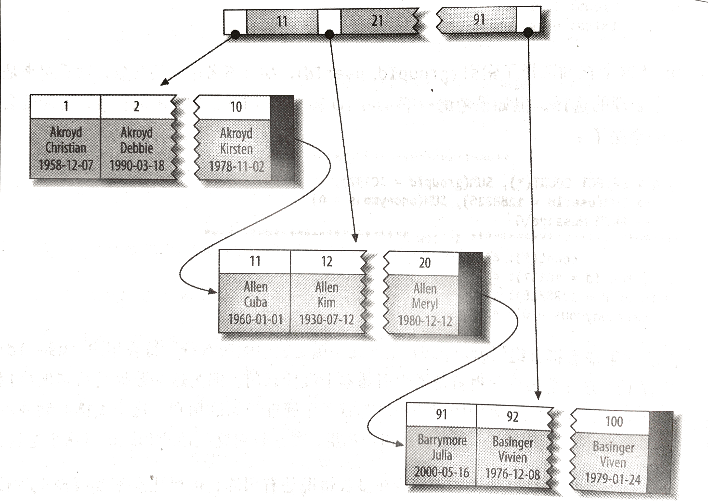
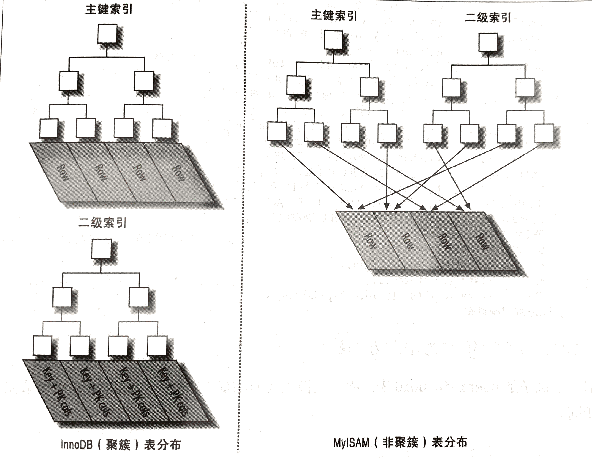

高效的选择和使用索引是实现高性能查询的基础，使用哪个索引，以及如何评估选择不同的索引是需要不断学习的
独立的列
独立的列索引： 索引列不能是表达式的一部分，也不能是函数的参数
SELECT actor_id FROM sakila.actor WHERE actor_id + 1 = 5;
WHERE 中的表达式 语义等价于 actor_id = 4, 但是MySQL 无法自动识别表达式，所以将单独列放到比较符号的一侧。
前缀索引和索引选择性
索引选择性：不重复的索引值和数据表的记录种数的比值。索引选择性越高，越能过滤更多的行，，唯一索引的选择性是 1.
对于BLOB 、TEXT 或者很长的VARCHAR类型的值，必须使用前缀索引，诀窍在于选择足够长的前缀以保证比较高的选择性，同时又不能太长以节省空间
解决办法一
最常见的列表和最长见的前缀列表机型比较
解决办法二
计算完整列的选择性，并使前缀的选择性接近于完成列的选择性。
聚簇索引

并不是一种单独的索引类型，而是一种数据存储方式，具体的细节依赖于实现方式，InnoDB 的聚簇索引实际上是在同一结构中保存了B-Tree和数据行
当表有数据行时，他的数据行实际是存放在索引的叶子页中，聚簇表示数据行和相邻的索引紧凑的存储在一起，因为无法把数据行村发哦在不同的两个地方，所以一个表只有一个聚簇索引，当然覆盖索引可以模拟多个聚簇索引的情况。
如果没有定义主键InnoDB 会选择一个唯一的非空索引替代，如果没有这样的索引，InnoDB 会隐式的定义一个主键来作为聚簇索引
优点
- 可以把相关的数据保存在一起
- 访问数据更快：因为索引和数据都保存在一起
- 使用覆盖索引扫描的查询可以直接使用页节点中的主键值
缺点
- 如果数据都放在内存中，那么聚簇索引就没那么重要了
- 插入速度严重依赖插入顺序
- 更新聚簇索引的代价很高
- 基于聚簇索引的表插入新行，或者主键别更新，可能导致页分裂
- 导致全表扫描变慢，比如 行稀疏，由于页分裂导致数据存储不连续
- 二级索引可能会更大
- 二级索引访问需要两次索引查找
MyISAM 和 InnoDB

顺序的主键造成坏结果
- 高并发插入可能导致间隙锁竞争
- AUTO_INCREMENT 锁机制
覆盖索引
如果一个索引包含所有需要查询的字段值，成之为覆盖索引
优势
- 索引条目通常小于数据行的大小
- 索引按照顺序存储，所以I/O密集型范围查询会效率高
- 如果InnoDB 二级索引在叶子节点中保存了行的主键值，如果二级索引能够覆盖查询，避免对主键索引的二次查询
使用索引扫描来排序
MySQL 通过排序操作或者是按索引顺序来扫描，如果EXPLAIN 出来的type 为index 说明MySQL 使用索引扫描作排序。
只有当索引的顺序和ORDER BY 字句的顺序完全一致，并且所有的列的排序方式都一样，可以通过索引排序。如果查询需要关联多个表，则只有当ORDER BY 子句引用字段必须是第一表；需要满足索引的最左前缀要求，如果前导列为常量测可以避免最左前缀
索引和锁
索引可以让查询锁定更少的行；
InnoDB 在二级索引上使用的是共享锁，方式访问主键索引是使用的排他锁，这消除了使用覆盖索引的可能性，并且使得SLELCT FOR UPDATE 比 LOCK IN SHARE MODE 或者非锁定查询要慢的多